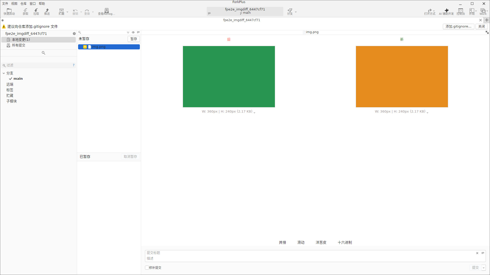
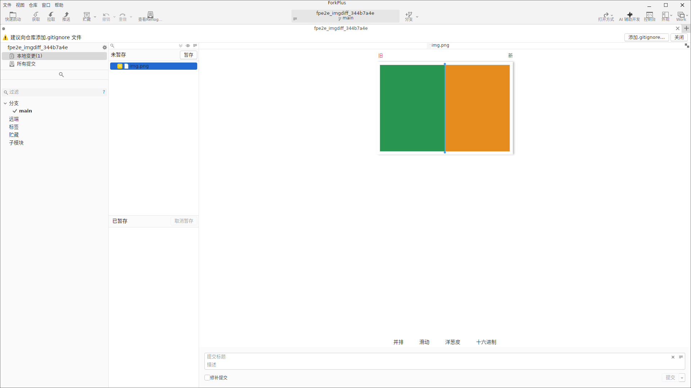
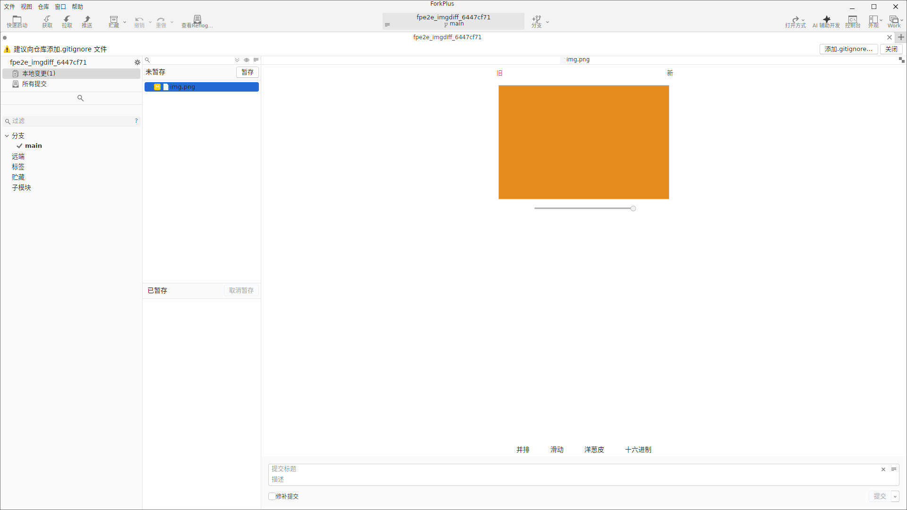
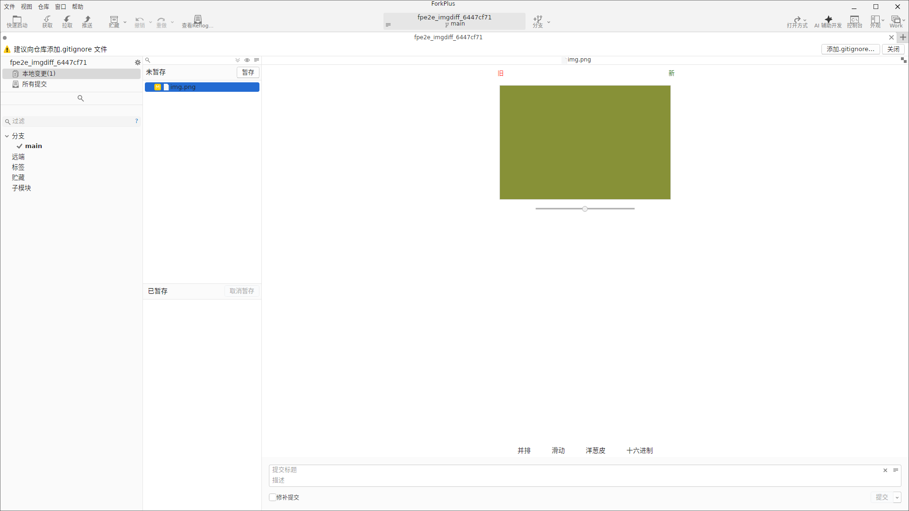
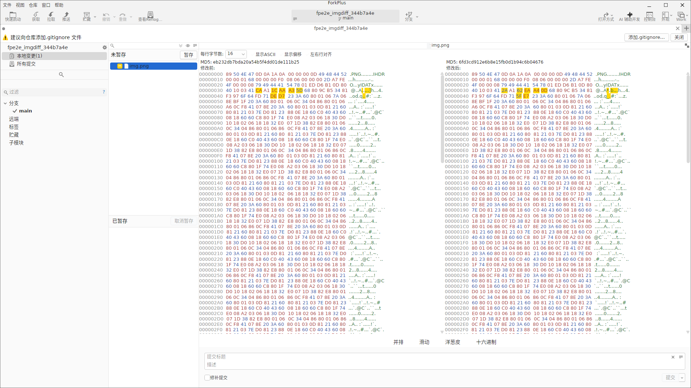
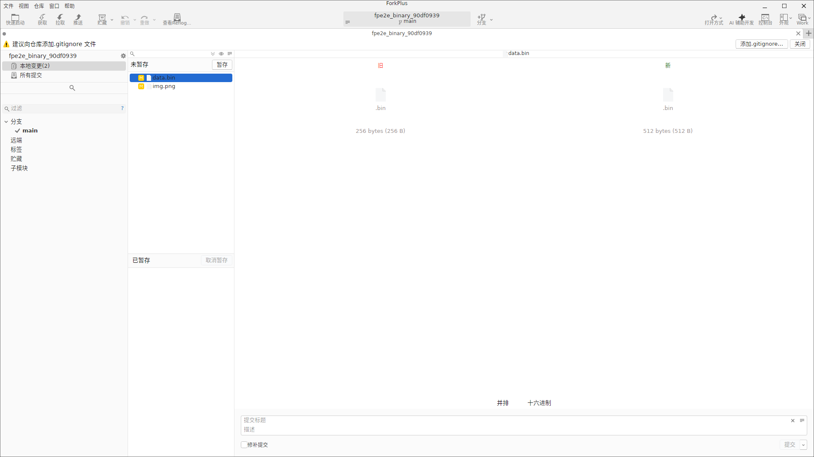
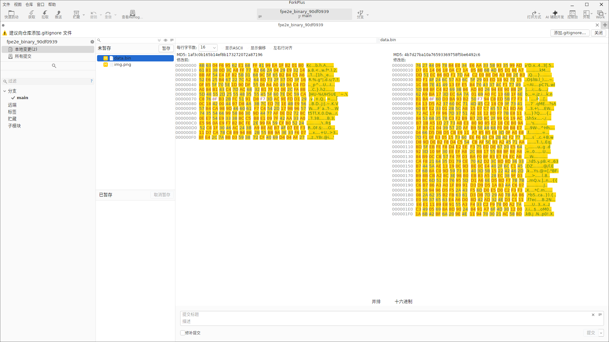
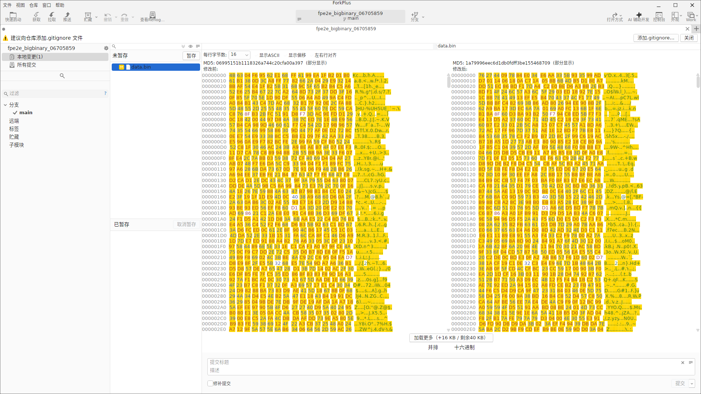

对于图片与其他二进制文件，ForkPlus 不再以文本行对比，而是提供专用的图形化差异工具，帮助你直观判断一张图、一个二进制文件在两个版本间到底改了什么。选择图片文件时提供四种对比模式；非图片二进制则提供简略卡片与 Hex 视图。
图片 Diff：四种对比模式
选中一个发生变更的图片文件后，编辑器下方出现四个模式按钮：并排 / 滑动（Swipe）/ 洋葱皮（Onion Skin）/ 十六进制（Hex），并标注「旧」「新」两个版本。
并排（Side-by-Side）
默认模式：并排显示旧图（左侧）与新图（右侧），一目了然看到两版的全貌差异。

滑动（Swipe）
滑动模式在两张图上叠加一条可拖动的分隔线：左侧露出旧图、右侧露出新图。左右拖拽分隔线即可在任意位置「刮开」对比新旧内容，非常适合精确定位某个像素区域的改动。

洋葱皮（Onion Skin）
洋葱皮模式把旧图叠在新图上，通过透明度滑杆控制底层（新图）的显露程度，模拟「洋葱皮透叠」效果。完全不透明时只见顶层旧图。


十六进制（Hex）
十六进制模式用双 Hex 编辑器展示图片文件的原始字节（左右分栏、逐字节对齐），供需要从二进制层面审查图片数据的场景使用。

非图片二进制的简略卡片视图
对于非图片的二进制文件（如 .bin），ForkPlus 提供简略卡片视图：左右两个卡片分别显示「旧」「新」版本的文件图标与字节大小（如 256 B → 512 B），不尝试解析内容，仅直观告知文件变化与体积变化。此时模式按钮只保留 并排 / 十六进制 两项（滑动 / 洋葱皮自动隐藏）。

Hex 视图
点击「十六进制」把二进制文件切到 Hex 视图，以字节（十六进制）形式逐行对比新旧内容，左右双编辑器对齐，可精确查看每个字节的变化。

大文件 Diff
对于体积较大的二进制文件，Hex 视图首屏只渲染开头一段字节，并提供「加载更多」分页加载机制，按需读取后续内容，避免一次载入大文件造成卡顿。
